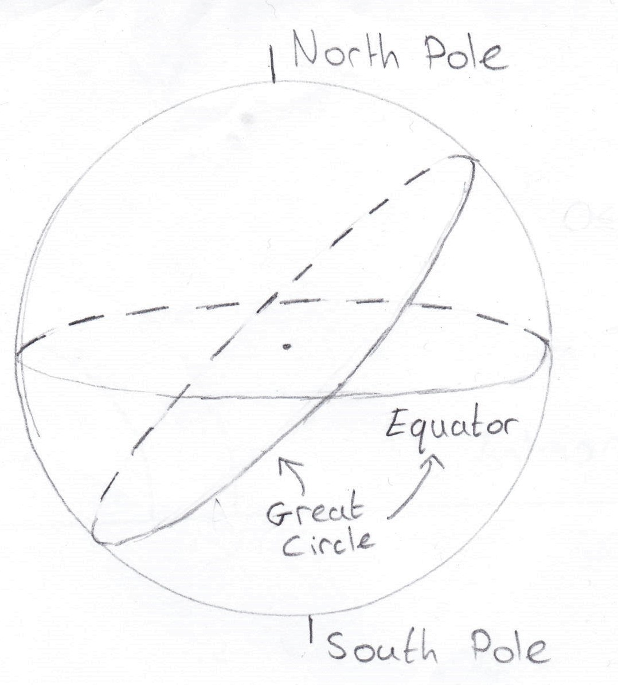
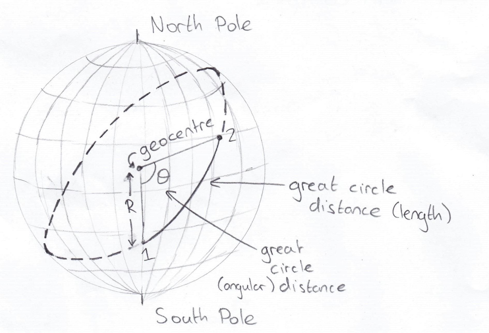
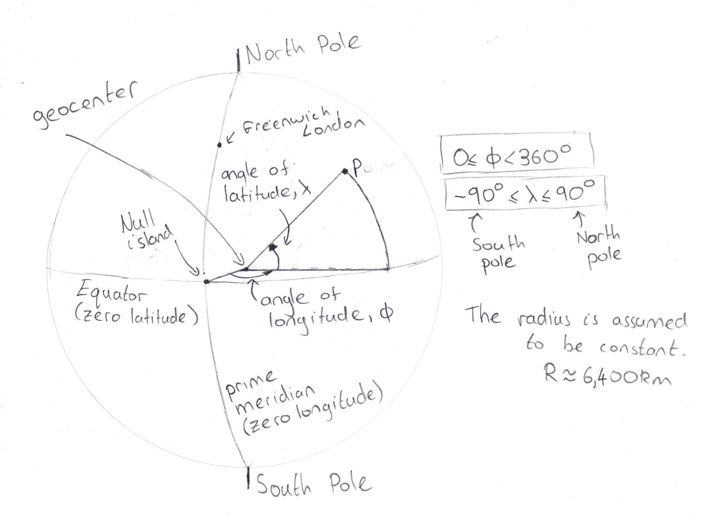
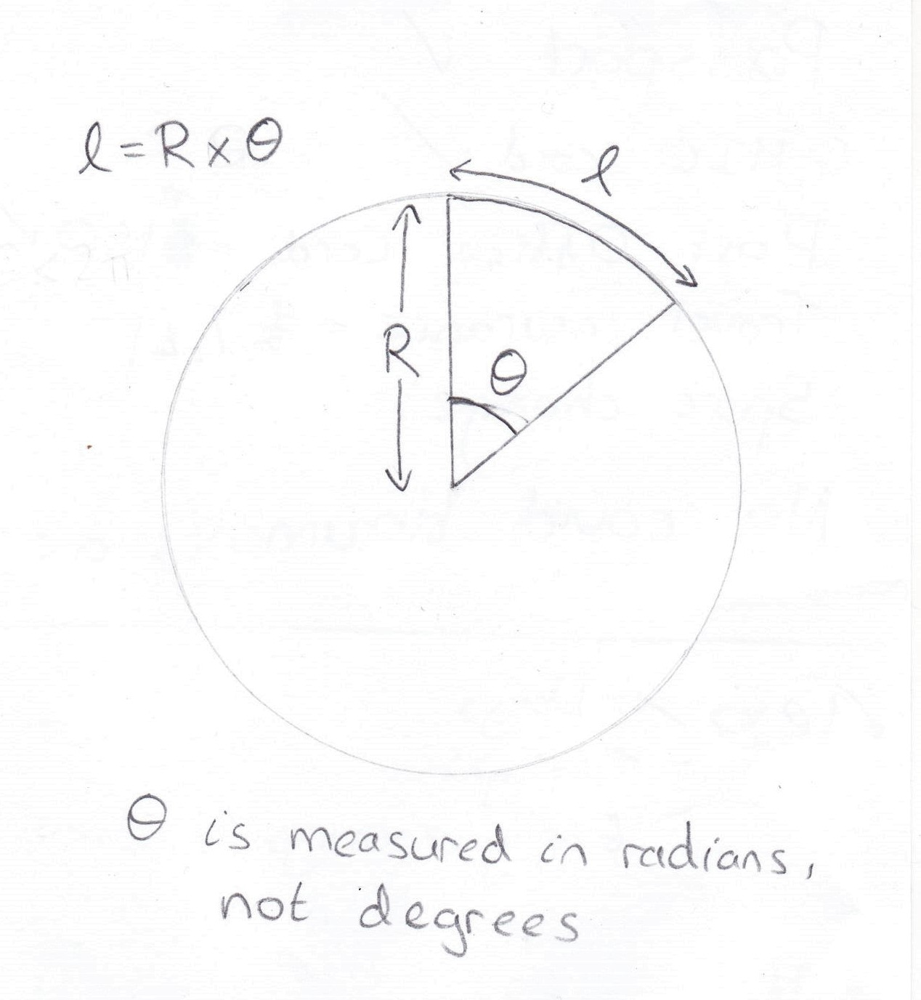
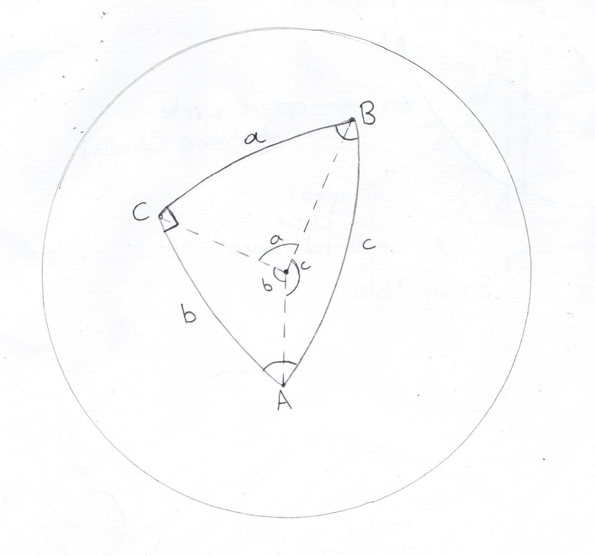

When you hear the word geometry, you probably think of triangles, squares, circles and other 2D shapes you can draw on paper. This kind of geometry is called Euclidian geometry. One defining feature of Euclidian geometry is that the shortest path between any two points is a straight line. Now imagine if the sheet of paper we were drawing on was actually a sphere.
Why are we discussing spherical geometry? Over short distances, the Earth's surface appears flat but over a large distance, we know that the Earth curves beneath us as a sphere does. Satellites and global navigation will therefore need to know about curved paths on a sphere (Earth is approximately a sphere).
This is a really important concept to understand when dealing with problems on a sphere. Imagine a sphere and an infinite plane in space. Make the infinite plane pass through the center of the sphere but free to be orientated in any direction. A great circle is simply the line formed at the intersection between the sphere and the infinite plane. Why is this so important? On the surface of a sphere, there is only ever one great circle that intersects two given points. It also happens that the part of the great circle between the two points is the shortest path, which is known as an arc of the sphere. Consider why the all lines of longitude and the equator are great circles but the other lines of latitude are not.
 The problems we will encounter will deal will involve locations on the surface of a sphere. We need to clarify the coordinate system we will use to specify them. In general, 2D and 3D spaces use the Cartesian system (x, y, and z axes). However, the natural choice for a sphere would be spherical polar coordinates. The radial coordinate is constant on a sphere, so most of our problems are dealing with only two dimensions on the sphere's surface. When discussing the Earth, global coordinates (latitude and longitude) are infact just spherical polar coordinates. Most data uses latitude-longitude coordinates, so we use them too in the decimal degree format.
When we normally talk about distance, we use the units of length (e.g. meters, kilometers, parsecs). This also applies on the surface of a sphere, like when we are talking about travelling the globe. However, for our purposes, we can do something a little different to simplify our calculations. A sphere has a constant radius, so any arc length of a great circle is directly proportional to the angle the endpoints of the arc subtend at the sphere's center. Adding together angles (e.g. a given longitude plus a displacement longitudinal angle) is simple. Remember that trigonometric functions on calculators and in computer langauges expect the units of angles to be in radians and not degrees! What's great is that once our functions return an angle, we simply multiply it (in radians) by the radius of the Earth, and there is our distance in familiar length units. Therefore, the actual radius of our sphere is irrelevant until the end of the calculation.
As with Euclidian geometry, triangles are very useful shapes. Any three points on the sphere may be connected by any combination of straight lines and curves to form a triangle, but they are not necessarily spherical triangles. A spherical triangle must have all three of its sides lying upon great circles for it to be called so.
Don't worry! If you have understood the topics this far, this shouldn't be too difficult. For spherical triangles that have a right angle at one vertex, we have a special set of formulas called Napier's Rules that help us. We cannot use Euclidian trigonometry here because the interior angles of a spherical triangle do not necessarily have to sum to give 180 degrees.
Recall that we measure vertex angles (capital letters) and side length angles (lower case letters) both in the units of radians. C does not appear in these rules because it is always 90 degrees.
